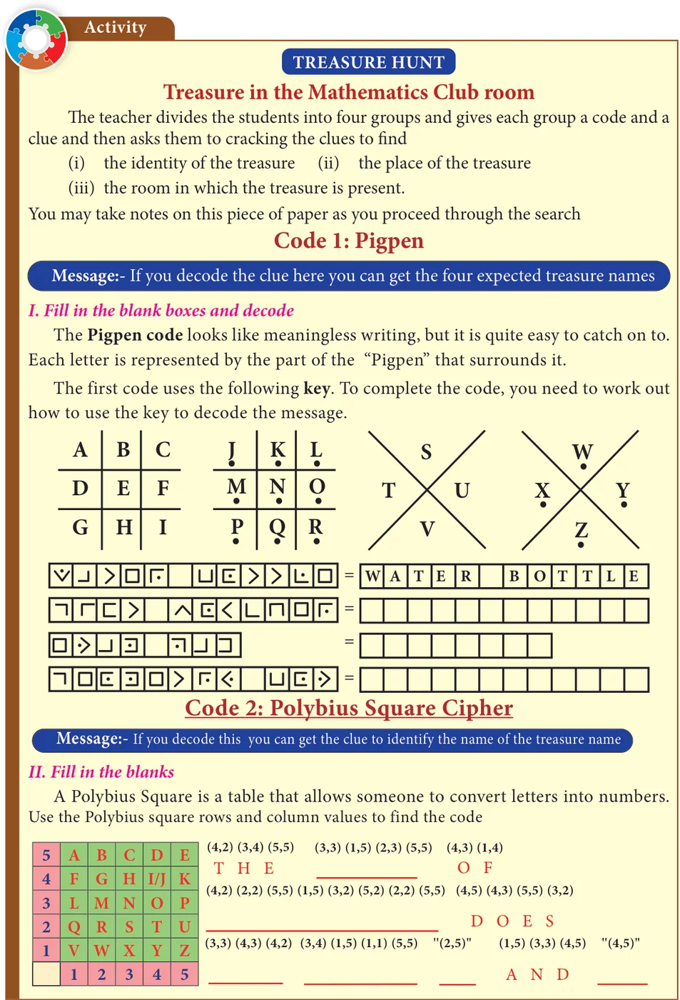
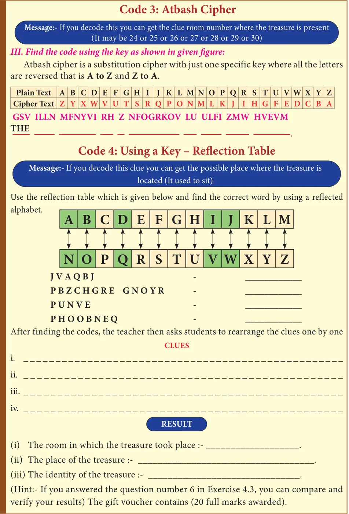

<!DOCTYPE html>
<html lang="en">
<head>
<meta charset="UTF-8">
<meta name="viewport" content="width=device-width,initial-scale=1">
<title>7.7 Cryptology — Information Processing</title>
<meta name="description" content="Class 8 Mathematics · Information Processing · 7.7 Cryptology">
<link rel="icon" href="data:image/svg+xml,<svg xmlns='http://www.w3.org/2000/svg' viewBox='0 0 100 100'><text y='.9em' font-size='90'>📘</text></svg>">
<link rel="stylesheet" href="../../../assets/book.css">
<link rel="stylesheet" href="https://cdn.jsdelivr.net/npm/katex@0.16.11/dist/katex.min.css" crossorigin="anonymous">
</head>
<body>
<header class="topbar">
<div class="topbar-in">
  <div class="crumb">
    <span class="c1"><a href="../../../index.html">Library</a> · <a href="../../index.html">Class 8 Mathematics</a></span>
    <span class="c2">Information Processing · 7.7 Cryptology</span>
  </div>
  <a class="tb-btn" data-nav="prev" href="../../07-information-processing/09-exercise-7.2/index.html" title="Exercise 7.2">←</a>
  <details class="drawer"><summary class="tb-btn" title="Sections in this chapter">☰</summary>
<div class="drawer-panel"><div class="dh">Information Processing</div><a href="../01-chapter-opener/index.html">Chapter opener</a><a href="../02-introduction-7.1/index.html">7.1 Introduction</a><a href="../03-principles-of-counting-7.2/index.html">7.2 Principles of Counting</a><a href="../04-set-game-7.3/index.html">7.3 SET - Game</a><a href="../05-map-colouring-7.4/index.html">7.4 Map Colouring</a><a href="../06-exercise-7.1/index.html">Exercise 7.1</a><a href="../07-fibonacci-numbers-7.5/index.html">7.5 Fibonacci Numbers</a><a href="../08-highest-common-factor-7.6/index.html">7.6 Highest Common Factor</a><a href="../09-exercise-7.2/index.html">Exercise 7.2</a><a href="../10-cryptology-7.7/index.html" aria-current="page">7.7 Cryptology</a><a href="../11-exercise-7.3/index.html">Exercise 7.3</a><a href="../12-shopping-comparison-7.8/index.html">7.8 Shopping Comparison</a><a href="../13-packing-7.9/index.html">7.9 Packing</a><a href="../14-exercise-7.4/index.html">Exercise 7.4</a></div></details>
  <a class="tb-btn" data-nav="next" href="../../07-information-processing/11-exercise-7.3/index.html" title="Exercise 7.3">→</a>
  <button class="tb-btn" data-theme-toggle title="Toggle light / dark" aria-label="Toggle light or dark theme">◐</button>
</div>
<div class="progress"><span style="width:94.4%"></span></div>
</header>
<main class="wrap">
<div class="sec-head">
  <p class="eyebrow"><a href="../index.html">Chapter 7 · Information Processing</a></p>
  <h1>7.7 Cryptology</h1>
  <p class="sec-meta">Textbook pages 23–29 · 5 figures</p>
</div>
<article class="prose">
<p>In today’s world, security in information is a fundamental necessity not only for military and political departments but also for private communication. Today’s world of communication has increased the importance of financial data exchange, image processing, biometrics and e-commerce transaction which in turn has made data security an important issue. Cryptology is defined as the science which is concerned with communication in secured form.</p>
<h3 id="s-7-7-1-cryptology-some-technical-details">7.7.1 Cryptology - Some technical details</h3>
<figure class="fig side-fig"></figure>
<p>Plain text: The original message is called plain text. Cipher text or Cipher number: The encrypted output (converted message into code) is called Cipher text or Cipher number. Cipher text is written in capital letters, while plain text is usually written in lowercase. A secret key is to use something to generate the Cipher text from the plain text. Encryption and Decryption: The process of converting the plain text to the Cipher text is called encryption and the vice versa is called decryption.</p>
<p>Let us try to create some Cipher text that we use in the form of coded message at some point in our real life.</p>
<h3 id="s-7-7-2-examples-of-cipher-code">7.7.2 Examples of Cipher Code</h3>
<ul class="qlist">
<li><span class="mk">1.</span><span class="lt">Shifting Cypher Text</span></li>
</ul>
<p>Ceasar Cipher</p>
<p>The Ceasar Cipher is one of the earliest known and simplest ciphers. It is a type of substitution cipher in which each letter in the text is “shifted” a certain number of places down the alphabets.</p>
<p>To pass an encrypted message from one person to another, it is first necessary that both parties have the ‘key’ for the cipher, so that the sender may encrypt it and the receiver may decrypt it. For the Caesar Cipher, the “key” is the number of characters to shift the cipher alphabet. So, we have to know how big the switch is to break the code. Let us know about more Ciphers from the following examples and situations.</p>
<h4 class="callout-h" id="s-example-7-8">Example 7.8</h4>
<p>Use Ceasar Cipher table set +4 and try to solve the given secret sentence.</p>
<p>fvieo mr gshiw ger fi xvmgoc</p>
<h4 class="callout-h" id="s-solution">Solution:</h4>
<p>Let us make Ceasar Cipher table first. Here, we have to set to +4 table. For that, we have to start letter e to set as A, f as B … likewise d as Z. Now, the Ceasar Cipher table looks like</p>
<p>Plain Text \(\frac{+4}{a} i j n p t\)</p>
<p>Cipher Text \(W \frac{b}{X} \frac{c}{Y} \frac{d}{Z} \frac{e}{A} \frac{f}{B} \frac{g}{C} \frac{h}{D} E F \frac{k}{G} \frac{l}{H} \frac{m}{I} J \frac{o}{K} L \frac{q}{M} \frac{r}{N} \frac{s}{O} P \frac{u}{Q} \frac{v}{R} \frac{w}{S} \frac{x}{T} \frac{y}{U} \frac{z}{V}\)</p>
<p>The given plain text is</p>
<p>fvieo mr gshiw ger fi xvmgoc</p>
<p>To crack this secret code, follow the steps given below.</p>
<p>Step 1: Using Ceasar Cipher table, let us first match the most repeated letters. This will help us to progress faster.</p>
<p>fvieo mr gshiw ger fi xvmgoc</p>
<p>Plain Text i j n p t</p>
<p>Cipher Text \(\frac{a}{W} \frac{b}{X} \frac{c}{Y} \frac{d}{Z} \frac{e}{A} \frac{f}{B} \frac{g}{C} \frac{h}{D} F \frac{k}{G} \frac{l}{H} \frac{m}{I} J \frac{o}{K} L \frac{q}{M} \frac{r}{N} \frac{s}{O} P \frac{u}{Q} \frac{v}{R} \frac{w}{S} \frac{x}{T} \frac{y}{U} \frac{z}{V}\)</p>
<div class="mathblock"><p>\(f v i e o m r g \frac{E}{sh} i w g e r f i x v m g o c\)</p></div>
<p>B R E A K I N C E C A N B E R I C K</p>
<p>Step 2: Then, let us find remaining letters to complete the code.</p>
<p>\(\frac{Plain\) Text}{Cipher Text} \(\frac{a}{W} \frac{b}{X} \frac{c}{Y} \frac{d}{Z} \frac{e}{A} B \frac{g}{C} \frac{h}{D} E \frac{k}{G} \frac{l}{H} \frac{m}{I} J \frac{o}{K} L \frac{q}{M} \frac{r}{N} \frac{s}{O} P \frac{u}{Q} \frac{v}{R} \frac{w}{S} \frac{x}{T} \frac{y}{U} \frac{z}{V}\)</p>
<div class="mathblock"><p>\(f v i e o m r g s \frac{F}{h} i w g e r f i x v m g o c\)</p></div>
<p>B R E A K I N C O D E S C A N B E T R I C K Y</p>
<p>Thus, the secret sentence is decoded as, BREAK IN CODES CAN BE TRICKY</p>
<ul class="qlist">
<li><span class="mk">2.</span><span class="lt">Substituting Cypher Text</span></li>
</ul>
<p>Each letter in a text is “substituted” by certain pictures and symbols, a key message, group of words, letters or a combination of these can be used to encode or decode the information. Let us learn more from the following situation.</p>
<h4 class="callout-h" id="s-situation">Situation:</h4>
<p>The teacher divides the class into two teams and displays a worksheet given in the figure below for students to complete. Play a game, teams take turns suggesting letter substitutions and someone entering your suggestions in the table. Teams earn points for correct letter guesses.</p>
<h2 id="s-worksheet-1-additive-cipher-key-5">Worksheet 1 :- Additive Cipher [key \(= 5]\)</h2>
<h3 id="s-convert-a-given-plain-text-into-additive-cipher-text-numbe">Convert a given plain text into Additive Cipher text (number) code.</h3>
<h2 id="s-mathematics-is-a-unique-symbolic-language-in-which-the-who">“ mathematics is a unique symbolic language in which the whole world works and acts accordingly.”</h2>
<h2 id="s-tips-for-cracking-additive-ciphers">Tips for cracking additive ciphers:</h2>
<p>Especially for additive Ciphers, you only need key number. You can complete the cipher table by filling in the rest of the numbers in order. If you can, find and make frequency table for alphabets, it is help you to get started. Match the most repeated letters first and fill the Cipher number. Look for familiar one-letter words like a or i. common two and three letter words like of, to, in, it, at, the, and, for, you ….. Look for consecutive numbers in the Cipher text and match them with possible consecutive letters in the plain text.</p>
<p>Now, to start converting a plain text into Cipher number, first we have to make a cipher table as shown below. Here there key is 5. As per key number, we have to start and fill \(a = 05\),</p>
<div class="mathblock"><p>\(b = 06\) …….. \(z = 04\) respectively.</p></div>
<p>Numbers \(\frac{a}{00} \frac{b}{01} \frac{c}{02} \frac{d}{03} \frac{e}{04} \frac{f}{05} \frac{g}{06} \frac{h}{07} \frac{i}{08} \frac{j}{09} \frac{k}{10} \frac{l}{11} \frac{m}{12} \frac{n}{13} \frac{o}{14} \frac{p}{15} \frac{q}{16} \frac{r}{17} \frac{s}{18} \frac{t}{19} \frac{u}{20} \frac{v}{21} \frac{w}{22} \frac{x}{23} \frac{y}{24} \frac{z}{25}\)</p>
<p>Plain Text</p>
<p>Cipher Numbers 05 06 07 08 09 10 11 12 13 14 15 16 17 18 19 20 21 22 23 24 25 00 01 02 03 04</p>
<p>To start encoding the text, let us count the frequency of alphabets and frame frequency table as shown below.</p>
<figure class="fig table-fig wide"></figure>
<p>With the help of Cipher table and frequency table, let us fill the Cipher numbers for the plain text. Let us first match the most repeated letters (5 times and above), then 2 to 4 times repeated letters and finally remaining letters step by step as shown in given figure.</p>
<p>Step 1:- Cipher number for most repeated letters(5 times and above) Plain text m t h e m t i s i s u n i q u y m b o l i c</p>
<p>Cipher Numbers \(\frac{a}{05} 1209 \frac{a}{05} \frac{c}{130723} 1323 \frac{a}{05} 1813 \frac{e}{09} \frac{s}{23} 19161307\)</p>
<p>Plain text l n g u g i n w h i c h t h e w h o l e</p>
<p>Cipher Numbers \(\frac{a}{160518} \frac{a}{05} \frac{e}{09} 1318 12130712 1209 12191609\)</p>
<p>Plain text w r d w r k s a n d a c t a c c o r d i n g y</p>
<p>Cipher Numbers \(\frac{o}{19} \frac{l}{16} \frac{o}{19} 23 0518 0507 \frac{s}{23} 05070719 1318 \frac{l}{16}\)</p>
<p>Step 2: Cipher number for most repeated letters (2 times and above) Plain text h e i s i s n i q y m b o l i c</p>
<p>Cipher Numbers \(\frac{m}{17} \frac{a}{05} \frac{t}{24} 1209 \frac{m}{17} \frac{a}{05} \frac{t}{24} \frac{c}{130723} 1323 \frac{a}{05} \frac{u}{25} 1813 \frac{u}{25} \frac{e}{09} \frac{s}{23} 0317 19161307\)</p>
<p>Plain text l n g u i n h i c h h e h o l e</p>
<p>Cipher Numbers \(\frac{a}{160518} 1124 \frac{a}{05} \frac{g}{11} \frac{e}{09} 1318 \frac{w}{01} 12130712 \frac{t}{24} 1209 \frac{w}{01} 12191609\)</p>
<p>Plain text k s a n a c a c c o r d i n</p>
<p>Cipher Numbers \(\frac{w}{01} \frac{o}{19} \frac{r}{22} \frac{l}{16} \frac{d}{08} \frac{w}{01} \frac{o}{19} \frac{r}{22} 23 0518 \frac{d}{08} 0507 \frac{t}{24} \frac{s}{23} 0507071922081318 \frac{g}{11} \frac{l}{16} \frac{y}{03}\)</p>
<p>Step 3: Cipher numbers for non-repeated letters Plain text m a t h e m a t i c s i s u n i q u e s y m b o l i c</p>
<p>Cipher Numbers \(1705241209170524130723 1323 \frac{a}{05} 251813212509 2303170619161307\)</p>
<p>Plain text l a n g u a g e i n w h c h t e w h l e</p>
<p>Cipher Numbers \(1605181125051109 1318 \frac{i}{0112130712} \frac{h}{241209} \frac{o}{0112191609}\)</p>
<p>Cipher Numbers \(\frac{r}{0119221608} \frac{r}{0119221523} \frac{n}{051808} 05072423 0507071922081318111603\) Thus, the Additive Cipher text for plain text is as follows:</p>
<p>Plain text w o l d w o k s a d a c t s a c c o r d i n g l y</p>
<p>“17 05 24 12 09 17 05 24 13 07 23 13 23 05 25 18 13 21 25 09 23 03 17 06 19 16 13 07 16 05 18 11 25 05 11 09 13 08 01 12 13 07 12 24 12 09 01 12 19 16 09 01 19 22 16 08 01 19 22 15 23 05 18 08 05 07 24 23 05 07 07 19 22 08 13 18 11 16 03”</p>
<figure class="fig table-fig wide"></figure>
<figure class="fig table-fig wide"></figure>
<h4 class="callout-h" id="s-try-these">Try these</h4>
<ul class="qlist">
<li><span class="mk">1.</span><span class="lt">Use Pigpen Cipher code and write the code for your name ________and your chapter</span></li>
</ul>
<p>names</p>
<ul class="qlist">
<li><span class="mk">(i)</span><span class="lt">LIFE MATHEMATICS (ii) ALGEBRA</span></li>
<li><span class="mk">(iii)</span><span class="lt">GEOMETRY (iv) INFORMATION PROCESSING</span></li>
<li><span class="mk">2.</span><span class="lt">Decode the following Shifting and Substituting secret codes given below. Which one is</span></li>
</ul>
<p>easier for you?</p>
<ul class="qlist">
<li><span class="mk">(i)</span><span class="lt">Shifting method:- M N S G H M F H R H L O N R R H A K D</span></li>
<li><span class="mk">(ii)</span><span class="lt">Substituting method:-</span></li>
<li><span class="mk">3.</span><span class="lt">Write a short message to a friend and get him to decipher it.(use either shifting or substituting</span></li>
</ul>
<p>code method)</p>
</article>
<nav class="pager"><a class="" data-nav="prev" href="../../07-information-processing/09-exercise-7.2/index.html"><span class="dir">← Previous</span><span class="t">Exercise 7.2</span><span class="ch">Information Processing</span></a><a class="nx" data-nav="next" href="../../07-information-processing/11-exercise-7.3/index.html"><span class="dir">Next →</span><span class="t">Exercise 7.3</span><span class="ch">Information Processing</span></a></nav>
</main><footer class="site">Generated from the source textbook PDFs · text, figures and exercises belong to their respective publishers.</footer><script defer src="https://cdn.jsdelivr.net/npm/katex@0.16.11/dist/katex.min.js" crossorigin="anonymous"></script>
<script defer src="https://cdn.jsdelivr.net/npm/katex@0.16.11/dist/contrib/auto-render.min.js" crossorigin="anonymous"
  onload="renderMathInElement(document.body,{delimiters:[
    {left:'\\(',right:'\\)',display:false},
    {left:'$$',right:'$$',display:true},
    {left:'\\[',right:'\\]',display:true}],throwOnError:false,ignoredTags:['script','noscript','style','textarea','pre','code']})"></script>
<script src="../../../assets/book.js"></script>
<script defer src="../../../../assets/search.js"></script>
</body>
</html>
